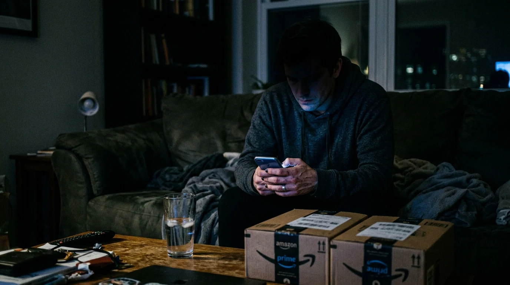
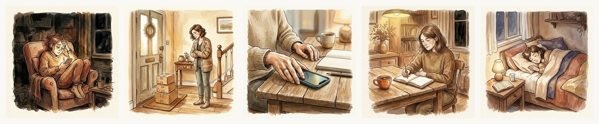
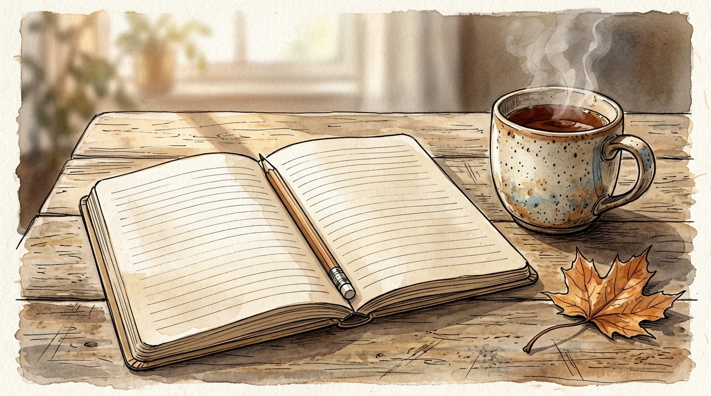

Son casi las once y media de la noche. Has cenado deprisa, has cerrado la tapa del portátil con los hombros en tensión y te dejas caer en el sofá con esa pesadez que no se quita solo con sentarse. En teoría es tu rato libre, el único momento del día en el que nadie te pide un informe, una firma o una respuesta inmediata. Pero en lugar de aflojar el cuerpo y descansar, desbloqueas el móvil por pura inercia.

Al principio entras a ver si hay mensajes nuevos, pero a los cinco minutos ya estás dentro de una tienda online. Empiezas mirando algo inocente y acabas comparando tres tipos diferentes de organizadores de cajones, una lámpara articulada para leer o unas zapatillas de estar por casa que jamás habías necesitado hasta hace un cuarto de hora. Miras las fotos, lees las opiniones de personas desconocidas y, sin darte cuenta, te convences de que ese objeto te va a cambiar la vida a partir del miércoles.
Pulsas el botón de comprar con un solo dedo. El cargo bancario entra sin pedir explicaciones, sientes una chispa breve y reconfortante de alivio, dejas el móvil en la mesilla de noche y te duermes con los ojos secos y la mente acelerada. Sin embargo, dos días después el timbre suena a mediodía. Recoges la caja de cartón precintada, la apoyas en la mesa de la entrada y, en el mismo instante en que rasgas la cinta de embalar, notas un bajón inevitable. El entusiasmo se ha esfumado por completo. Lo que tienes en las manos es solo otro trasto más que no sabías dónde meter.
No compraste ese producto porque fuera indispensable para tu día a día ni porque estuviera en una oferta irrepetible. Lo compraste simplemente porque estabas fundido. Cuando una jornada ha sido un goteo incesante de quejas ajenas, reuniones que podrían haber sido un correo y tareas impuestas, tu cabeza busca a la desesperada una sensación de autonomía. Necesitas sentir que todavía mandas sobre tu propia vida.
Y en ese estado de agotamiento, gastar veinte o treinta euros en algo que va a viajar hasta la puerta de tu casa parece una victoria barata. Es una recompensa rápida que te das por haber aguantado el tipo durante diez horas seguidas. El problema es que a partir de las diez de la noche el filtro de la sensatez está bajo mínimos. No estás eligiendo con criterio; estás intentando tapar el estrés con dopamina instantánea.
El paquete que esperas con ilusión no arregla el cansancio del día. La emoción dura el segundo en que le das a pagar; lo que queda después en el pasillo es solo cartón y una pizca de culpa.
Las aplicaciones de compras en el móvil lo saben de sobra y han afinado el diseño para ponértelo facilísimo. Han quitado cualquier paso que te obligue a frenar y pensar: no tienes que levantarte del sofá a por la cartera, no hay que rellenar formularios y el proceso de compra es tan fluido que parece que no estuvieras gastando dinero real. Todo está preparado para que resbales desde el aburrimiento hasta la compra sin encontrar un solo obstáculo en el camino.
Nos engañamos creyendo que el siguiente objeto nos traerá orden, tranquilidad o mejores hábitos. Pensamos que con una libreta nueva empezaremos por fin a organizarnos, que con unas tazas de cerámica desayunaremos más despacio o que con unos auriculares con cancelación de ruido nos concentraremos como nunca. Pero los objetos no crean los hábitos por sí solos. Lo que de verdad te falta a esas horas de la noche no es un organizador de armarios: es dormir en paz y apagar las pantallas a tiempo.

Romper esta costumbre no exige sacrificios heroicos ni instalar aplicaciones complejas que te bloqueen el teléfono. La clave está en introducir una pequeña pausa deliberada entre el antojo y el pago, el tiempo justo para que tu cabeza recupere la perspectiva.
El truco más eficaz y fácil de aplicar es la regla de las veinticuatro horas en la cesta. Si estás en la cama a las once de la noche y crees haber encontrado algo que necesitas con urgencia, añádelo al carrito si te apetece, pero ponte una condición sagrada: no le des a comprar hasta el día siguiente después de comer. Casi siempre ocurre lo mismo: cuando vuelves a mirar la cesta a la luz del sol, descansado y con un café recién tomado, el objeto ha perdido toda la magia. Lo miras con indiferencia y lo borras sin que te tiemble el pulso.
Otro cambio que transforma tus noches es sacar el cargador del dormitorio. Cargar el teléfono en el salón o encima de una cómoda al otro lado de la habitación corta de raíz el gesto involuntario de alargar el brazo cuando ya estás bajo las mantas. Si no tienes la pantalla al alcance de la mano a oscuras, no hay catálogo infinito que mirar ni compras de medianoche que lamentar.
Cuando sientas ese gusanillo nocturno de buscar cosas por internet para desconectar del trabajo, haz una prueba mucho más barata y duradera. Deja una libreta sencilla y un lápiz sobre la mesa de centro o en la mesilla.
En vez de ponerte a navegar por ofertas absurdas, abre la libreta y escribe en tres líneas lo que te pesa hoy: la conversación pendiente que te ha dejado mal cuerpo, la sensación de haber ido con la lengua fuera todo el día o el miedo a no llegar a todo mañana. El papel no tiene colores brillantes ni algoritmos diseñados para retener tu mirada. Escribir a mano baja las revoluciones de tu mente al instante y te ayuda a ver las cosas como son.
En cuanto lo escribes te das cuenta del truco: no necesitabas comprar nada. Solo necesitabas cerrar el día, soltar lo que no puedes arreglar a las once de la noche y concederte unas horas de silencio. Mañana tendrás tiempo para resolver lo pendiente. Esta noche lo único urgente es apagar la luz y descansar de verdad.
Aprende a frenar las vueltas a la cabeza y a tomar decisiones con serenidad gracias a nuestro cuaderno guiado Deja de Darle Vueltas, o pon a prueba tu filtro mental con nuestras herramientas gratuitas.